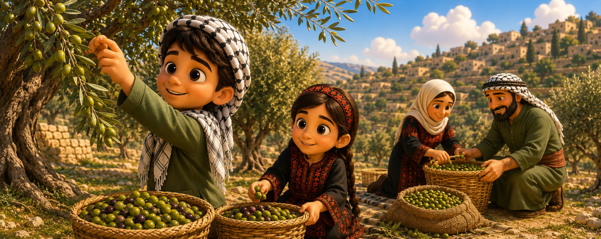

Reading
القراءة
Every autumn, Palestinian families gather to harvest olives. This is one of the most important times of the year. Families wake up early in the morning and go to their olive groves together.
Children help their parents by spreading large sheets under the trees. Then, adults use long sticks to knock the olives off the branches. The olives fall onto the sheets below. Children collect the olives and put them into big baskets.
After the harvest, families take the olives to the olive press. There, the olives are washed and crushed to make fresh olive oil. Palestinian olive oil is famous for its great taste and quality.
The olive harvest is not just about work. It is also a time for families and neighbours to come together. People sing songs, share food, and enjoy being with each other. For Palestinians, the olive tree is a symbol of patience, peace, and belonging to the land.
Ideas
الأفكارThe olive harvest is a yearly Palestinian tradition that brings families and neighbours together and stands as a symbol of patience, peace and belonging to the land.
موسم قطف الزيتون عادة فلسطينية سنوية بتجمع العيلة والجيران، وهو رمز للصبر والسلام والانتماء للأرض.
Vocabulary
المُفرداتReading Comprehension
الفهم القرائيValues
القيم المستفادةWhat can this lesson teach us about life? ما القيم التي يمكن أن نتعلّمها من هذا الدرس؟
Working together makes hard work lighter and more joyful.
التعاون يُخفّف العمل الصعب ويزيد الفرح.
Patience brings the best results, like the olive tree that gives after years of care.
الصبر يأتي بأفضل النتائج، مثل شجرة الزيتون التي تُعطي بعد سنوات من العناية.
We should love our land and keep our traditions alive.
علينا أن نحبّ أرضنا ونحافظ على تقاليدنا.